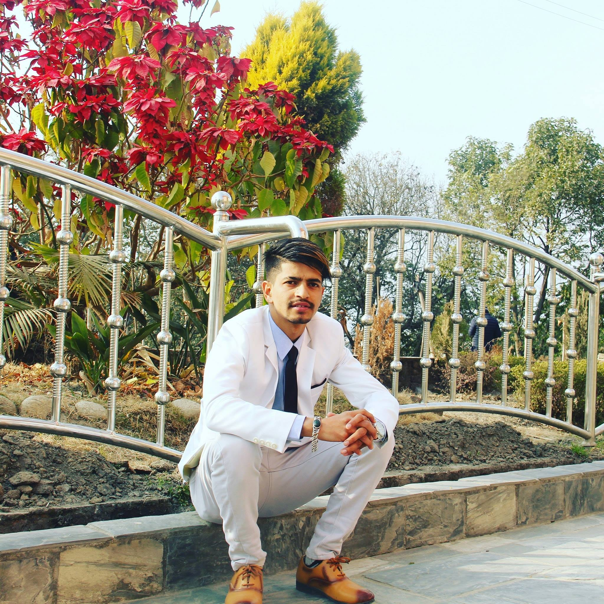
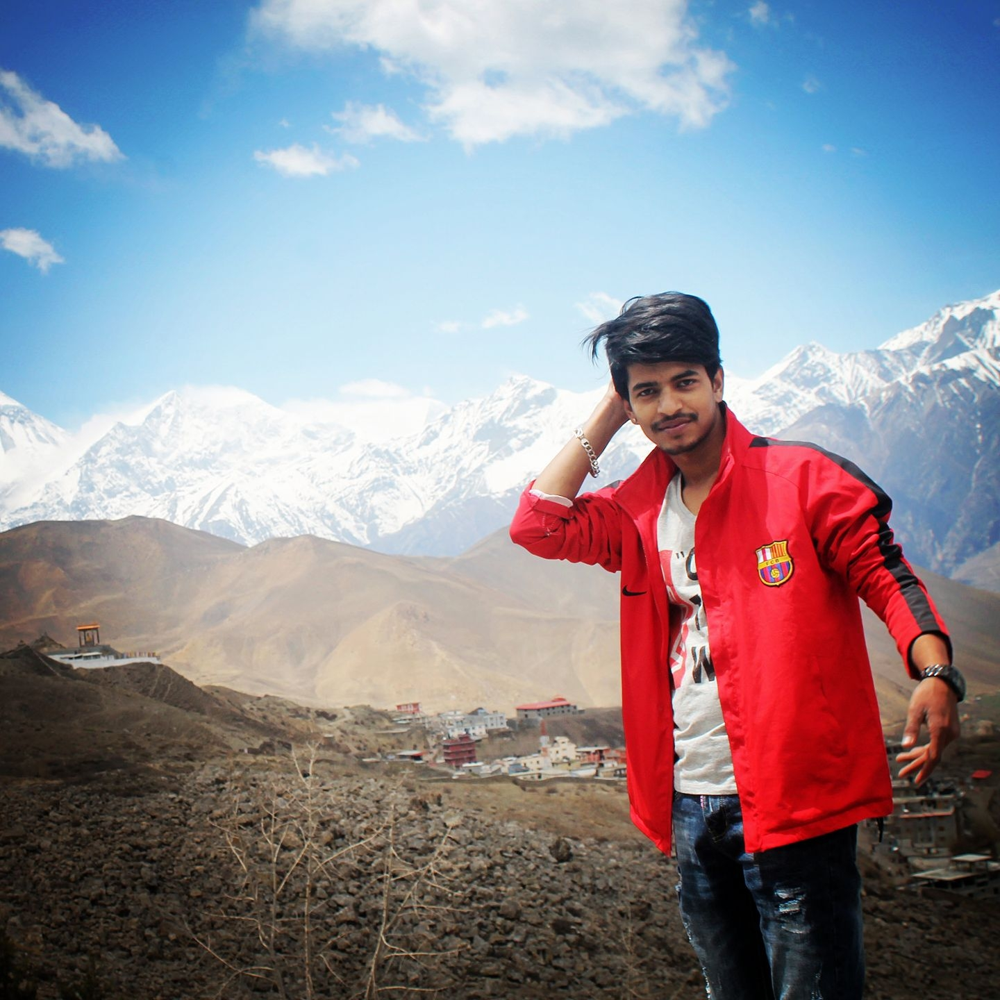

1. Location : Mustang, Nepal 2. Pokhara, Nepal
 \3. Location : Krishnamandir, Nepal 4. Jomsom, Nepal
I belongs from the Mid-Westren part of the Nepal, called Sindhupalchok district and it is a part of Province No. 3. which has many natural beautiful tourist destination including mountains, rivers, lakes and longst free fall in the world.


Image Source: https://www.acevisionnepal.com/trip/bungee-jump/ Image Source: https://aerolinatours.com/nepal/adventure-sports/bungee-jumping.html
Bhotekoshi, a upper river part of Sunkoshi river and located at 8,012 meter altitude in Sindhupalchok, Nepal. It is used for both rafting and kayaking. National and international tourist used to visit for sightseeing of natural beautiful river, jungle, mountains. The interal visitors mostly visit Bhotekoshi in the time of Monsoon to do the rafting. In addition there are good facilty for housing and fooding as like beach resorts, hotels and home stay.
Video Source: https://www.youtube.com/watch?v=Cnt9b2hpwRM


Image Source: https://adventuresherpatracks.com/panch-pokhari-trek/ Image Source: https://nepalecoadventure.com/nepal-trekking/langtang-region/panch-pokhari-trekking/
Panch Pokhari is a group of 05 hindu holly lakes located in Sindhupalchok, Nepal. It's altitude is 4,100m and also known as the 9th highest altitude wetland in the world. It has many religious importance and the number of people increased in the Janai Purnima. The main reason of being back in the sector of tourism is, it is located in the remote place and there is no facility of transportation. Visitors have to do 8-12 hours treeking to reach over there. It could be the one of the great tourist destination if concern department look around for developing the required infastructure.


Image Source: http://www.firante.com/jugal-himal-trek/ Image Source: https://www.enepaltreks.com/tours/jugal-himal-trek/
Jugal Himal lies in the north east from Kathmandu and the treeking started from Melemchi, Sindhupalchok. Visitors can get a change to intract with Tamang community and can get local loddiging and fooding service on the way to Mountain. The breath taking view of waterfall and jungles can be seen while going to the trekking. It is just 4 hrs ride from Kathmandu to reach at the starting destination for trekking thus quite nearer than the other himalays.